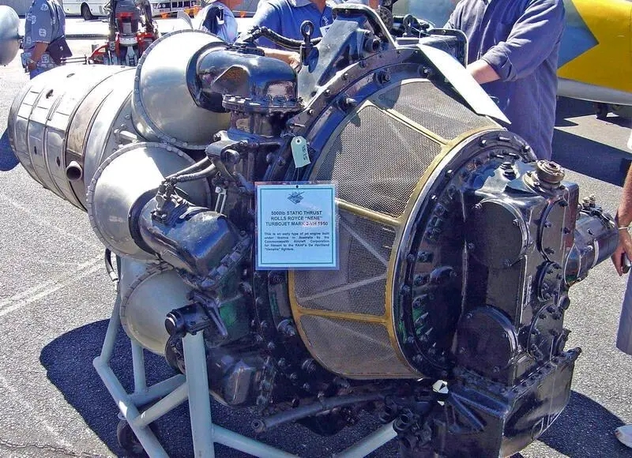
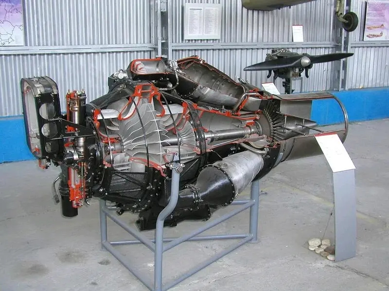
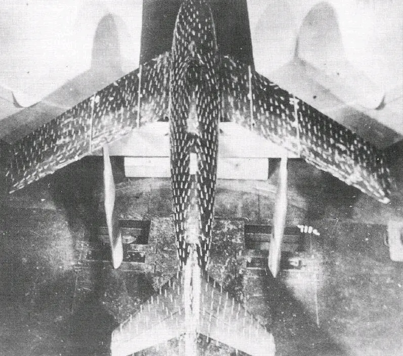
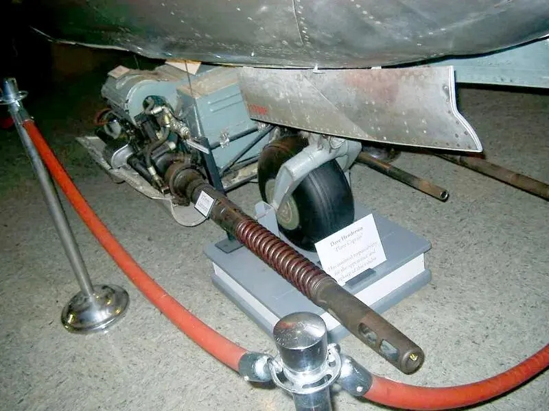
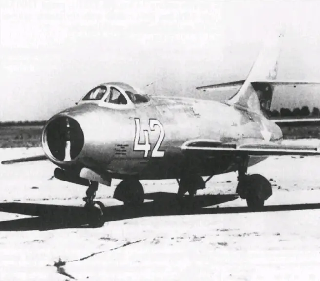
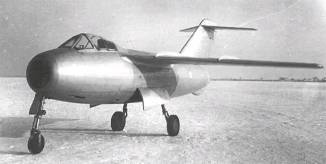
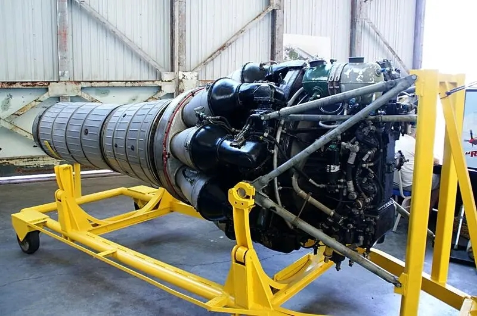
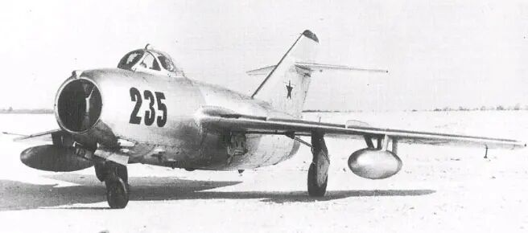

米格-15诞生记（上），传奇的开端
发布时间：2020-08-15
原作者：Armstrong
搬运地址：空军之翼
在首次冲向云霄70年后，引人注目的米格-15仍然是历史上产量最高的战斗机，正是该机的出色成就才使米格设计局依据跃升为战后顶尖战斗机设计机构之列。
米格-15的故事始于第二次世界大战的黑暗时期，在这场全球战争中，军用航空技术经历了迅速发展，以至于在战争即将结束时，新一代远程重型轰炸机成为令苏联人最为担心的武器。
虽然俄罗斯帝国是战略轰炸机的发源地，伊戈尔·西科斯基早在1913年就制造出世界上第一种四发重轰——“伊利亚·穆罗梅茨”号，但重型轰炸机的发展自那以后日新月异，到二战即将结束时，已经具有了毁灭国家的能力。
1944年5月8日在德国投降前一年，波音B-29“超级堡垒”轰炸机进入美国陆军航空兵服役。1945年8月6日，一架B-29轰炸机在一次持续12小时的任务中向广岛投下了人类战争史上第一枚原子弹，凸显轰炸机的远程战略作战能力。战后迅速出现的B-50和B-36“和平缔造者”轰炸机进一步增强了美国的战略轰炸能力。
1946年3月21日，美国陆航成立战略空军司令部（SAC）统筹战略轰炸机的作战，对苏联形成实质性威胁。同月，斯大林在克林姆林宫召见阿尔乔姆·米高扬和其他几位知名战斗机设计师，要求立即发展能够拦截迫在眉睫的美国战略轰炸机威胁的战斗机。苏联政府制定的新战斗机标准既严格又全面，新机在设计上必须皮实耐用，最大速度不低于0.9马赫，并安装重型武器，升限要达到11000米，续航时间一个多小时。
哪个傻瓜会向我们出卖自己的机密？
苏联人很早就意识到自己的涡喷发动机不够先进，无法支持如此先进的战斗机的研制。当时最先进的涡喷发动机都被英国人垄断，于是苏联开始尝试以盟国身份与英国接触，要求购买。米高扬很快就随同苏联航空发动机权威弗拉基米尔·克利莫夫和发动机生产技术专家谢尔盖·基什金前往英国考察，罗尔斯·罗伊斯公司向三人展示了其最先进的“尼恩”（Nene）和“德文特”（Derwent）涡喷发动机，给苏联人留下深刻印象。

随后两国展开采购研判，斯大林对此持悲观态度，在早些时候发出了著名的“哪个傻瓜会向我们出卖自己的机密？”质疑。但尽管英国国防部极不愿达成销售协议，但工党政府却愿意向苏联出口这两种尖端发动机和支持文件，两国在1946年9月达成了10台“尼恩”的小批量销售，很快又续签了后续15台，6个月后苏联又买到了30台“德文特”发动机。
逆向工程
几乎是英国发动机一运抵苏联国土，苏联人就开始了逆向工程，很快制造出了本土复制品——RD-45（“尼恩”2）和RD-500（“德文特”5），编号中的“ RD”是俄语“喷气式发动机”的缩写，“ 45和500”则表示生产工厂。两种发动机都在短短几个月内开始批量生产。

此时米高扬的新战斗机设计已经相当深入，在确定新发动机指日可待后，米高扬立即对机身进行了大范围的修改。在经典的米格-15成形之前，米格设计局对新机气动布局进行了广泛研究，最终选择了后掠翼高置平尾布局，机翼后掠35度带2度下反，使飞机迈入高亚音速飞行领域。每侧机翼上表面都安装有两个翼刀，以阻止气流在后掠翼上表面展向流动，提高空气动力学性能。米格-15的机身粗短，后方两侧设置有减速板，前缘后掠56度的高大垂尾向后方伸展，与后掠平尾形成十字形尾翼布局。该机长10.1米，翼展10.09米，在米格-15的整个发展史中，这两个数据始终未变。

该机的其他创新设计包括火灾报警和灭火系统，以及使用绞盘和钢缆升起/放下的武器平台。该平台位于机鼻下方，米格设计局经过研究后确定这个位置对于机炮武器来说能实现精确度、可及性和重心保持的最佳结合。安装在平台上的武器包括左侧的两门诺德尔曼-苏阿诺夫（Nudelman-Suranov）NS-23机炮和一门安装在右侧的诺德尔曼N-37机炮，分别备弹80发和40发，持续射击时间不到9秒，可为了增加击落轰炸机的几率，必须要加大机炮威力。

机头圆形进气口之后的分叉进气道绕过座舱两侧，将进气输送给发动机。为了方便发动机维护，整个后机身可在主油箱后方整体脱开。除1240升的内部油箱外，该机还可在翼下挂载两个250升可抛副油箱。座舱在设计上充分考虑到飞行员的舒适性，具有增压和空调功能，并成为第一种具有气泡式座舱盖和弹射座椅的苏联战斗机，增强了座舱视野和飞行安全性。
I-310原型机
米格设计局将新战斗机的技术验证机命名为I-310，该机于1947年底准备就绪。在等待合适的首飞天气条件时，第一架I-310 S-01号以各种速度进行了持续数天的滑行测试。最终在12月30日，该机在试飞员维克多·尤加诺夫上尉的驾驶下首飞并给予了总体肯定的评价。后续试飞一直持续到1948年第一季度，虽然试飞仍未完成，但苏联政府迫不及待地于3月15日颁布第790-255号命令，批准该机作为米格-15量产，此举最后被证明是明智的。

米格设计局共制造了3架I-130，分别是S-01、S-02和S-03，S-01的最后一次飞行发生在1948年5月25日，两天后S-02首飞，不到两个月后的7月17日，S-03首飞。I-310在当年剩下的大部分时间里都在契卡洛夫斯克进行的分阶段试飞，S-03达到了0.934马赫（1152公里/小时）的最大速度。
后两架原型机根据试飞结果进行了一些改进，如S-02安装了改进后的座舱盖和机翼，以及新型S-13照相枪和和ASP-1N瞄准具，S-03增加了减速板，尾翼经过了改进，副翼面积加大并配备了大型副油箱。两架原型机完成试飞后还被作为发动机试验台测试克里莫夫RD-45的改进型——VK-1及其VK-1F加力型。
米格-15在8月23日开始全面生产，首架生产型由尤加诺夫驾驶在12月30日起飞，距离原型机首飞刚好一年。
竞争对手
米格设计局研制的I-310受到两家老牌战斗机设计机构的竞争，其中之一是雅克设计局的雅克-30。该机于1948年9月4日首飞。该机安装一台RD-500发动机，最大速度1025公里/小时，升限15000米。由于性能大幅落后于I-310，因此这种布局与米格-15类似的战斗机没有投产。

雅克-30 拉沃契金设计局的拉-168是实力更雄厚的参赛选手，于1948年4月22日首飞，与米格-15共享动力装置和武器装备。但该机的研制颇为不顺，经过大约十个月的测试后，机炮引发的机械故障证明该机存在严重结构缺陷。经过改进后的拉-174原型机仍存在结构振动问题，直到1948年夏末拉-174D的出现，项目才步入正轨。
![拉-168]](10.jpg)
拉-174D和I-310存在许多共同点，但拉-174D的机翼后掠37.3度并且是上单翼，因此该机的主起落架被安装在机身两侧而不是机翼上。

在性能方面，拉-174D拥有更出色的机动性和稳定性，但爬升、航程、火力和易于生产等方面都不及I-310。经过大约100架次对比试飞后，两者难分胜负，都获得了投产，分别成为拉-15和米格-15。由于米格-15的结构更简单，造价更低，所以在朝鲜战争爆发后获得大批量生产，而拉-15仅生产了235架，在苏联空军中服役到1953年。
米格-15比斯
米格-15的生产速度非常快，但该机此时还远称不上完美。米格设计局在发现并解决存在的一系列问题后，相应的改进措施也被被应用在工厂的生产线上，导致各批次都存在细微差别。因此米格设计局在生产稳定下来后着手研制米格-15的第一种正式改进型——米格-15SD，其编号很快就改为米格-15比斯（Bis是“第二”的意思）。该机最重要的变化是使用VK-1发动机取代了RD-45，以解决后者需要频繁检修、推力不足、耗油率高和可靠性不佳等问题。

2.7吨推力的VK-1安装在中后期米格-15比斯上，使该机速度达到1076公里/小时，并能以2700米/分的速度爬升，分别比第一代米格-15增加了27公里/小时和183米/分。飞机的实用升限也从15200米提高到15500米，航程从1960公里扩大到2000公里。随着性能的提高，该机的降落滑跑距离也随之延长，因此需要配备减速伞。

米格-15比斯的其他改进重新设计的减速板，能张开22度。座舱经过升级，NS-23机炮换成了射速更快的NR-23。后期该机还可在翼下挂载两枚116千克的ARS-212或四枚26千克的TRS-190火箭弹。